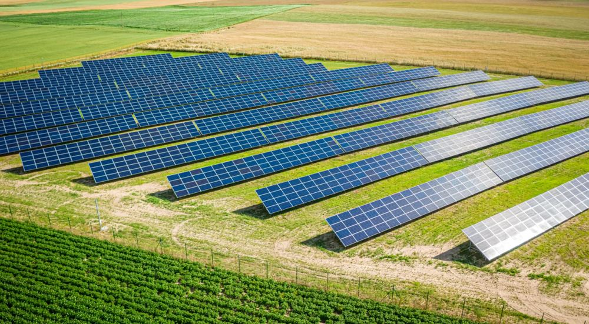
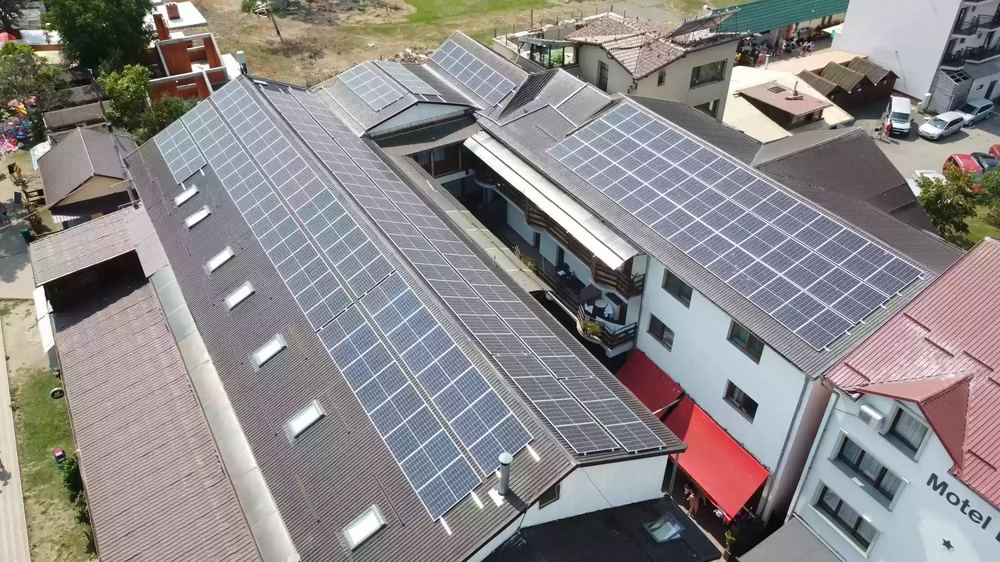
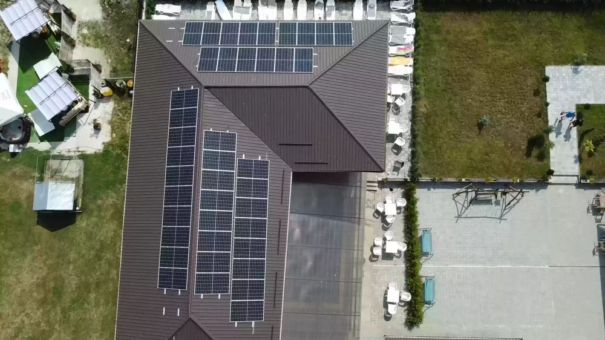
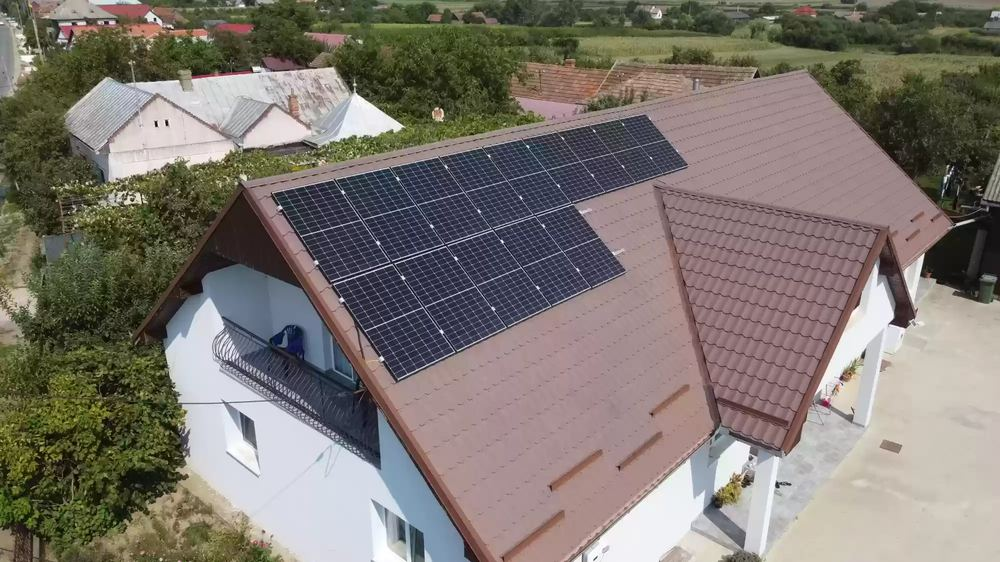

Minimum 25% önerő
A projekt értékéből saját forrásból fedezendő rész.
Tárold el a napenergiát, és használd, amikor szükséged van rá. Válassz rendszerkonfigurációt, majd kérj ellenőrzést a kompatibilitásról, az aktuális készletről és az árról.
A jelentkezés indulásáig
Magánszemélyek jelentkezése: nov. 20. 10:00 – nov. 25. 23:59
LFP · moduláris, álló
Az AFM programja a már napelemmel rendelkező magánszemélyek akkumulátoros energiatároló rendszerét támogatja. Ezt érdemes tudni, mielőtt kiszámolod a pontszámodat.
A projekt értékéből saját forrásból fedezendő rész.
Az elszámolható költség felső határa, ÁFÁ-val együtt.
Magánszemélyeknek, akik hivatalos termelő-fogyasztói (prosumer) státusszal rendelkeznek.
A 2.314/2026-os rendelet szerint (Monitorul Oficial 953/2026.11.16.). Figyelem: az önerő pontszáma az önerő és az AFM-támogatás arányából számítódik, ezért akkor is nő, ha kevesebb támogatást kérsz.
Holtverseny esetén a sorrend: az önerő összege, a tárolókapacitás, az energiatárolásra kapott korábbi közpénz támogatás, végül a jelentkezés dátuma és időpontja.
Készítettünk egy listát, ami segít időben összegyűjteni a dokumentumokat. Itt tudod letölteni.
Dokumentumlista letöltéseA tájékoztató jellegű. A pontos feltételeket és a jelentkezési időszakot az AFM finanszírozási útmutatója tartalmazza. Az oldal nem jelent regisztrációt, jogosultságot vagy támogatási ígéretet. A feltüntetett árak és modellnevek példák, nem minősülnek kereskedelmi ajánlatnak.
Hivatalos forrás: az AFM közzétett naptára. A végleges feltételeket és a szükséges dokumentumokat az AFM finanszírozási útmutatójában ellenőrizd.
A program akár 15 000 lejt is finanszíroz, és egyes cégek az árat ehhez igazítják, mintha az állam úgyis kifizetné a különbséget. A támogatás azonban csak felső határ, nem célár. Az akkumulátorok piaci ára jellemzően 1 500 lej/kWh alatt van, ezért a plafon közelében kínált ajánlat túlárazásra utalhat. Kérj több árajánlatot, és hasonlítsd össze:
A legdrágább ajánlat nem automatikusan a legjobb. Minél alacsonyabb a valós ár, annál kisebb és kezelhetőbb a saját részed.
A maximális ponthoz legalább 15 kWh kell, és az önerőnek el kell érnie az AFM-támogatást, vagyis a projekt értékének legalább 50%-át. A támogatást a felső határ alatt is kérheted.
Gondolkodj el azon, hogy lecseréled-e. A Huawei inverterek csak a saját akkumulátoraikkal működnek, és nagyon drágák. Egy kompatibilis hibrid inverterrel az akkumulátor telepítése gazdaságosabb lehet.
Kövesd az oldalunkat a legfrissebb információkért a programról.
Néhány kérdés, néhány szám, és percek alatt képet kapsz arról, hol állsz a programban.
Az aktuális készletet és szállítási határidőt az ajánlatban erősítjük meg.
Kiszámoljuk, hogy melyik kapacitás és önerő hozza a legtöbb pontot.
Tapasztalt csapat, rendezett kivitelezés, a napelemedhez illesztett rendszer.

Köszönjük ügyfeleink bizalmát. Ezt a tapasztalatot visszük tovább a 2026-os akkumulátorprogramba is.

200 kW kapacitás

110 kW kapacitás

104 kW kapacitás

68 kW kapacitás

16,4 kW kapacitás

5,6 kW kapacitás
Írj vagy hívj személyre szabott ajánlatért; ellenőrizzük a rendszer kompatibilitását és az aktuális készletet.